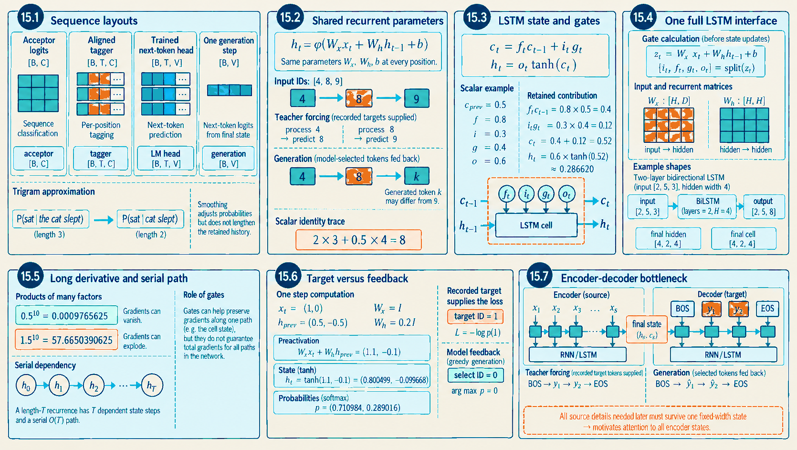
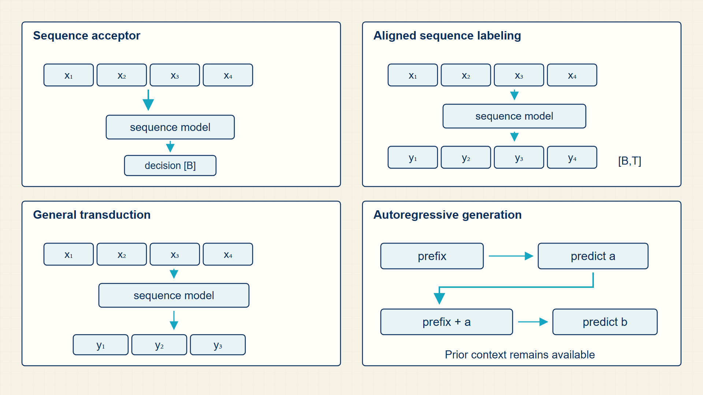

15 Recurrent networks: Context, state, and sequential computation
Sequence predictions need aligned targets and a state mechanism that can carry information beyond a fixed token history.
A fixed token vector gives the same starting representation to bank in river bank and bank account. A sequence model must also use the surrounding tokens. A short count history can supply some context, while a recurrent state can depend on tokens before that fixed window.
The task determines which outputs are needed and which positions may influence them. Retaining earlier information, learning its effect, and computing successive states impose different constraints.

15.1 Sequence inputs, outputs, and targets
A review classifier needs one decision for a complete text. A word-labeling task needs a decision at each position. A generator needs a continuation whose length is not fixed by the prompt. These output requirements determine where predictions and targets must align before a network is chosen.
A sequence acceptor reads an input sequence and returns one result, such as its topic label. For a batch of \(B\) texts and \(C\) classes, its logits have shape \([B,C]\), with hard targets of shape \([B]\).
A sequence transducer maps an input sequence to an output sequence. In aligned sequence labeling, \(T\) input positions yield \([B,T,C]\) class logits and \([B,T]\) hard targets. Translation also maps sequences, but its output length can differ from the source length. That case needs a separate target-position axis.
An autoregressive model predicts each output token from the available prefix. Its next-token head has one score per vocabulary entry, using \(V\) for vocabulary size. During training with recorded preceding tokens, logits can have shape \([B,T,V]\). At generation time, the current step supplies \([B,V]\) next-token scores. A Chapter 7 selection rule then extends the prefix.
These are task layouts rather than network families. A recurrent network can support each layout with a suitable head and input policy. Padding also requires a loss policy: a stored output position need not correspond to a reference answer.
Token IDs remain discrete selectors. The lookup from §13.1 turns \([B,T]\) IDs into vectors of shape \([B,T,D]\). One-hot vectors are another input representation. The recurrent cell receives these numerical vectors, rather than interpreting the size of an ID as a word feature.
For example, two five-token sequences embedded at width three yield input shape \([2,5,3]\). A tagging head with four classes would produce \([2,5,4]\). A generator with six vocabulary entries would instead produce \([2,5,6]\) during aligned training. The changed final axis represents different possible answers, even though the input vectors have the same shape.
With the next-token task fixed, the count estimator from §3.4 provides a baseline for examining how much preceding context a predictor can use. Smoothing can assign positive probabilities to unseen continuations and unseen histories, but it does not extend the history retained by the estimator.
The Markov assumption introduced with the count model in §3.4 restricts prediction to a fixed suffix of the history. An n-gram predictor retains at most \(n-1\) preceding tokens. At a sequence boundary it uses the configured start markers or the shorter available history. A trigram example replaces \(P(\mathrm{sat}\mid\mathrm{the\ cat\ slept})\) by \(P(\mathrm{sat}\mid\mathrm{cat\ slept})\). Changing only the earlier the cannot affect that trigram prediction.
Increasing \(n\) admits more history while making exact matches rarer. Held-out loss under a fixed vocabulary and tokenization can compare the available evidence and context length.
Instead of discarding everything before a fixed suffix, a recurrent model can update a fixed-width summary as each token arrives.
15.2 Shared recurrent parameters and next-token alignment
An earlier token may matter after it leaves a short count window. A recurrent neural network, or RNN, carries a hidden vector between positions. Its RNN cell combines the current input vector with the preceding state using shared parameters.
For one sequence, let \(x_t\in\mathbb R^D\) be the current input vector and \(h_{t-1}\in\mathbb R^H\) the preceding hidden state. A plain cell computes
\[ h_{t}=\phi(W_{x}x_{t}+W_{h}h_{t-1}+b) \tag{15.1}\]
The matrices \(W_x\in\mathbb R^{H\times D}\) and \(W_h\in\mathbb R^{H\times H}\) map both inputs to width \(H\). The bias \(b\) also has width \(H\). The activation \(\phi\) acts on each coordinate. The same matrices and bias are reused at every time step. An initial state \(h_0\), often zero, is part of the sequence setup.
One common activation is tanh, compared with other choices in §12.2. Its exact formula is \(\tanh(a)=(e^a-e^{-a})/(e^a+e^{-a})\). It maps real inputs into \((-1,1)\) and is zero at zero. Its sign follows the input, so the state can carry positive or negative content.
The state summarizes the prefix through repeated transformations. Its fixed width does not impose a fixed token-history length, but it can lose information. A token head maps the state to logits:
\[ z_{t}=W_{o}h_{t}+b_{o} \tag{15.2}\]
For generation, \(W_o\in\mathbb R^{V\times H}\), \(b_o\in\mathbb R^V\), and \(z_t\in\mathbb R^V\). A tagging head would use \(C\) output classes instead. An acceptor can apply its head only to the final valid state.
Example: A state update and separate output checks
In a scalar cell with identity activation, let the input weight be 2, recurrent weight 0.5, input 3, previous state 4, and bias zero. The new state is \(2(3)+0.5(4)=8\).
For a separate two-coordinate output check, \(h_t=(1,2)\), identity \(W_o\), and zero \(b_o\) give logits \((1,2)\). Softmax, if needed for generation, acts after this projection.
With both scalar recurrent weights equal to 1, input 2, previous state 1, and zero bias, the preactivation is 3. A tanh cell would return \(\tanh3\approx0.995\), whereas an identity cell returns 3.
Conclusion: Shared affine parameters combine old and new information. The activation determines the state values, while the separate output head determines which answers those values score.
Teacher forcing supplies recorded previous tokens as decoder inputs during training. For a decoder predicting target token number \(t\), write its input ID as
\[ u_{t}=x_{t-1}^{\mathrm{gold}} \tag{15.3}\]
Here \(x_{t-1}^{\mathrm{gold}}\) is a recorded token ID, not the input vector in the earlier recurrence. At \(t=1\), the configured start marker supplies the previous token. Lookup or one-hot encoding converts \(u_t\) to the cell’s vector input. This prediction-index convention agrees with §1.2’s pairing of an input position with its following target.
For recorded IDs \([4,8,9]\), processing ID 4 produces logits compared with 8. Processing recorded ID 8 next produces logits compared with 9. During generation, the second input is instead the token selected from the first distribution, which need not be 8.
Backpropagation through time, abbreviated BPTT, differentiates the recurrent computation after treating each time step as another use of the same cell. Contributions from all uses add into the shared parameter gradients. The state-to-state products in §15.5 isolate one derivative route. A shared parameter gradient instead combines contributions from every occurrence of that parameter. First, a gated cell changes how old state and new input are combined.
15.3 Separate cell state and gated contributions
A plain recurrent step transforms the entire state again at every position. Retaining one coordinate while replacing another requires control over those separate contributions. Long short-term memory, or LSTM, adds a cell-state path. Its gates apply different factors to retained state and new content.1
The cell state \(c_t\in\mathbb R^H\) carries the additive memory values. The hidden state \(h_t\in\mathbb R^H\) is the exposed output passed to a following layer or head. Equal shapes do not make these states equal.
Concatenation joins vectors along an axis. For example, \([h_{t-1};x_t]\) joins widths \(H\) and \(D\) into width \(H+D\). An elementwise product, written \(a\odot b\), multiplies matching coordinates of equal-shaped vectors.
A forget gate \(f_t\) sets the fraction of each old cell coordinate retained. An input gate \(i_t\) scales new candidate content \(g_t\). An output gate \(o_t\) scales the transformed cell state exposed through \(h_t\). Sigmoid gives gate values between zero and one for finite scores.
The concatenated-input forget-gate form is
\[ f_{t}=\sigma\!\left(W_{f}[h_{t-1};x_{t}]+b_{f}\right) \tag{15.4}\]
Here \(W_f\) has shape \([H,H+D]\) and \(b_f\) shape \([H]\). A value near zero suppresses the associated contribution. A value near one retains most of it. These are multiplications of numerical coordinates, not explicit memory-storage commands.
Once the gates and candidate are available, the cell combines their contributions:
\[ c_{t}=f_{t}\odot c_{t-1}+i_{t}\odot g_{t} \tag{15.5}\]
Both products have shape \([H]\). The first retains part of \(c_{t-1}\), and the second adds new content. The hidden output is \(h_t=o_t\odot\tanh(c_t)\).
Example: Updating one memory coordinate
Use \(c_{t-1}=0.5\), candidate \(g_t=0.4\), forget gate \(f_t=0.8\), input gate \(i_t=0.3\), and output gate \(o_t=0.6\). These supplied values isolate the state update.
The retained term is \(0.8(0.5)=0.4\). The candidate contributes \(0.3(0.4)=0.12\). Thus \(c_t=0.52\) and \(h_t=0.6\tanh(0.52)\approx0.286620\), or 0.287.
Conclusion: The cell retains 0.4 and adds 0.12, while the exposed hidden value is smaller. Separate gates control retention, addition, and exposure. Their values alone do not guarantee retention of earlier information over many steps.
A gated recurrent unit, or GRU, is another gated cell, using reset and update gates without a separate cell-state tensor. It retains one recurrent state vector rather than the LSTM’s two. Its recurrence still depends on the preceding step. The LSTM’s full gate calculation supplies the concrete example below.2
15.4 One full LSTM step and its array interface
The preceding trace supplied gate values directly. A complete cell must calculate them from the current vector and previous hidden state before updating either state.
Splitting a concatenated-input matrix into separate input and hidden blocks gives the equivalent gate equations
\[ \begin{aligned} i_{t}&=\sigma(W_{i}x_{t}+U_{i}h_{t-1}+b_{i}),\\ f_{t}&=\sigma(W_{f}x_{t}+U_{f}h_{t-1}+b_{f}),\\ o_{t}&=\sigma(W_{o}x_{t}+U_{o}h_{t-1}+b_{o}) \end{aligned} \tag{15.6}\]
Here \(x_t\) has width \(D\), \(h_{t-1}\) width \(H\), each \(W\) shape \([H,D]\), and each \(U\) shape \([H,H]\). Each bias has width \(H\). Subscripts \(i,f,o\) distinguish independent gate parameters. In this section, \(W_o\) and \(b_o\) belong to the output gate, rather than the vocabulary projection in §15.2.
The candidate uses its own affine parameters followed by tanh. The new cell and hidden states then follow:
\[ \begin{aligned} g_{t}&=\tanh(W_{g}x_{t}+U_{g}h_{t-1}+b_{g}),\\ c_{t}&=f_{t}\odot c_{t-1}+i_{t}\odot g_{t},\\ h_{t}&=o_{t}\odot\tanh(c_{t}) \end{aligned} \tag{15.7}\]
The candidate \(g_t\) has width \(H\) and coordinates between negative one and one. All products marked \(\odot\) act coordinatewise. The order is gates and candidate, then \(c_t\), then \(h_t\). The old states remain inputs to this entire step.
Example: Gate scores through both new states
For a chosen scalar cell, let \(x_t=1\), \(h_{t-1}=0\), and \(c_{t-1}=0\). Set all gate weights and biases to zero. Each gate preactivation is then 0, giving \(i_t=f_t=o_t=\sigma(0)=0.5\).
Choose the candidate input weight as \(\tfrac12\log(1.38/0.62)\approx0.400060\), with its hidden weight and bias zero. Its tanh is 0.38, the candidate value chosen for this calculation.
The retained term is \(0.5(0)=0\). The new term is \(0.5(0.38)=0.19\), so \(c_t=0.19\). The hidden output is \(0.5\tanh(0.19)\approx0.093873\), or 0.094.
Conclusion: The gate scores produce three half-weight factors, but the cell and hidden states differ. The candidate’s tanh and the final tanh act at different points in the calculation.
Stacking recurrent layers feeds one layer’s sequence outputs into the next. Bidirectional recurrence separately scans the available input in forward and reverse order, then joins the two outputs at each position. It can use a complete input for labeling. A backward language model likewise reads a recorded sequence in reverse to predict earlier tokens. Neither arrangement provides future generated tokens to an ordinary left-to-right generator, because those tokens do not yet exist.
The runnable example uses nn.LSTM with two layers, hidden width four, and both directions. It receives random inputs of shape \([2,5,3]\). batch_first=True puts the batch axis first on inputs and sequence outputs.3
Code example: Deep bidirectional LSTM dimensions
import torch
import torch.nn as nn
batch, steps, input_width, hidden_width = 2, 5, 3, 4
inputs = torch.randn(batch, steps, input_width)
lstm = nn.LSTM(
input_size=input_width,
hidden_size=hidden_width,
num_layers=2,
batch_first=True,
bidirectional=True,
)
outputs, (final_hidden, final_cell) = lstm(inputs)
print(outputs.shape) # [batch, steps, 2 * hidden_width]
print(final_hidden.shape) # [layers * directions, batch, hidden_width]
print(final_cell.shape)The output shape is \([2,5,8]\), because each position joins two width-four directions. Final hidden and cell states each have shape \([4,2,4]\). Their first axis combines two layers with two directions. It does not follow the batch-first setting. Random parameters check this interface, not learned memory quality.
nn.RNN, nn.GRU, and nn.LSTM expose related sequence operations. The LSTM returns the pair of final states shown here. Even a gated or bidirectional cell retains sequential dependencies within each direction.
15.5 Repeated derivatives and the serial path
An effect from an early state must pass through every intervening recurrent transition before reaching a later loss. The derivative chain rule therefore contains repeated factors. Their size affects learning independently of the storage width of the state.
For a scalar tanh RNN, let \(a_t=W_xx_t+W_hh_{t-1}+b\) and \(h_t=\tanh(a_t)\). Differentiating the exponential expression for tanh gives derivative \(1-\tanh^2(a_t)\). Holding other inputs fixed, one state derivative is \((1-h_t^2)W_h\).
Across \(k\) transitions, the path derivative is the product of those \(k\) local factors. Multiplying it by \(dL/dh_t\) carries a later loss sensitivity to the earlier state. Vector states use ordered Jacobian products instead. Losses attached at several positions contribute additional paths, whose derivatives add under §11.4’s path-sum rule.
Example: Shrinking and growing paths
Take a final scalar sensitivity of 1 and ten transitions whose local derivatives are all 0.5. The derivative with respect to the earlier state is \(0.5^{10}=0.0009765625\).
In a separate path with ten factors of 1.5, it becomes \(1.5^{10}=57.6650390625\). These are supplied local derivatives, not a claim that every trained recurrent cell has constant factors.
Conclusion: Repeated multiplication can nearly erase or strongly amplify a signal even when each individual factor is moderate. A vanishing gradient shrinks along a long path. An exploding gradient grows enough to disrupt useful updates or numerical computation.
The LSTM adds a direct cell path. Holding gates fixed along that path, \(\partial c_t/\partial c_{t-1}\) has diagonal entries \(f_t\). Values near one can preserve that contribution better. Gate dependencies through the hidden state add other paths, so this observation is not a guarantee about the total gradient. Clipping can limit large gradients, but cannot recover a signal already lost through small factors.
The path length counts transitions connecting two positions. A sequential dependency requires an earlier result before the next operation can proceed. A length-\(T\) recurrence has \(T\) dependent state steps, even though coordinates, batch items, and matrix arithmetic can be processed in parallel.
Big-O notation describes how a cost grows, ignoring fixed factors in the stated regime. With cell dimensions fixed, the serial step count is \(\mathcal O(T)\). Full BPTT commonly saves intermediate values across those steps. Keeping a fixed-width inference state therefore does not make training storage independent of sequence length. Recomputing values trades extra work for storage.
Truncated BPTT stops gradient propagation at selected sequence boundaries while optionally retaining state values for the next segment. It limits the learning path as well as saved graph data. It differs from resetting the state, which also discards the retained state information.
Exposure bias describes the mismatch between recorded training prefixes and the model’s own generated prefixes. A wrong sampled token can lead to contexts seldom encountered under teacher forcing. This input mismatch is separate from gradient products and serial computation.
15.6 A state update with its target and feedback
A next-token calculation must keep the input vector, previous state, output logits, and target attached to the same time step. The following trace uses fixed parameters and a supplied reference next token to make that alignment inspectable.
The figure compares output locations for several sequence tasks. Its generator omits the recurrent-state connection between successive steps. The calculation below retains that state as well as token feedback.

Use a two-coordinate input \(x_t=(1,0)\), previous state \(h_{t-1}=(0.5,-0.5)\), input matrix \(I\), recurrent matrix \(0.2I\), and zero bias. Substitute these values into the recurrence from §15.2.
Its preactivation is \((1,0)+(0.1,-0.1)=(1.1,-0.1)\). The resulting state is approximately \((0.800499,-0.099668)\), displayed as \((0.800,-0.100)\).
Choose a two-token vocabulary and an identity output matrix with zero bias. The output projection from §15.2 gives those same two coordinates as logits, one for each possible following token. Their softmax is approximately \((0.710984,0.289016)\). If the recorded following token has ID 1, its loss uses the second probability. Greedy generation instead selects ID 0.
For this illustration, let ID 0 select vector \((1,0)\) and ID 1 select \((0,1)\). Teacher forcing supplies \((0,1)\) at the next step. Greedy generation supplies \((1,0)\). Both use the same newly computed hidden state at the next step, but their different inputs generally produce different future states.
For a batch, input vectors have shape \([B,T,D]\), all states \([B,T,H]\), and token logits \([B,T,V]\). A single-layer state at one time has shape \([B,H]\). A multi-layer interface also records the layer axis. Token loss can flatten aligned logits to \([B T,V]\) and targets to \([B T]\), with padding excluded as in §8.5.
Conclusion: The current state depends on both the current input and the previous state. The recorded target determines loss, while the selected token determines generation feedback. Independent sequences require a deliberate reset or initialization, so one request’s state does not become another’s accidental context.
15.7 Encoder-decoder recurrence and its bottleneck
A translation model must condition its generated sequence on a separate source sequence. A fixed-state recurrent encoder-decoder does this by letting one recurrence read the source vectors and using its final state to initialize another recurrence that generates the output.
For a plain encoder with state width four, a width-four decoder can use the final encoder vector directly. Different widths need a learned projection. An LSTM arrangement must specify both initial hidden and cell states.
Suppose the source has three positions and the recorded translation has two tokens followed by EOS. The encoder processes its three vectors in order. The decoder starts from the source summary and a start marker, predicting the first translation token. Teacher forcing next supplies that recorded token to predict the second, then supplies the second to predict EOS. Generation instead supplies each selected output. The source summary conditions every decoder step through the state passed from one step to the next.
The entire source must fit into that fixed-width summary. This is the encoder-decoder bottleneck: every source detail needed later must survive in one vector or state tuple.
Conclusion: Recurrent encoding gives the decoder a source summary, but the fixed summary can lose details before the decoder needs them. Chapter 16 introduces attention so a decoder position can combine multiple encoder states directly.
Chapter checkpoint
Does smoothing let a trigram use information more than two tokens back? Does an LSTM remove the serial dependency? Can the bidirectional example directly generate a causal continuation?
Answer: Smoothing changes probabilities within the retained history. It does not lengthen it. LSTM gates change state retention and gradient paths, but each step still needs the preceding states. Bidirectional recurrence uses the complete input, including later positions, so it cannot read future tokens that a causal generator has yet to produce.
Hochreiter, S., & Schmidhuber, J. (1997). Long short-term memory. Neural Computation, 9(8), 1735–1780. The equations here use the common forget-gate form rather than claiming every detail matches the original cell.↩︎
Cho, K., van Merriënboer, B., Gulcehre, C., Bahdanau, D., Bougares, F., Schwenk, H., & Bengio, Y. (2014). Learning Phrase Representations using RNN Encoder–Decoder for Statistical Machine Translation. Proceedings of the 2014 Conference on Empirical Methods in Natural Language Processing (EMNLP), 1724–1734, §2.3.↩︎
PyTorch Contributors. (2026). LSTM. PyTorch 2.12 documentation. The example omits projection layers.↩︎